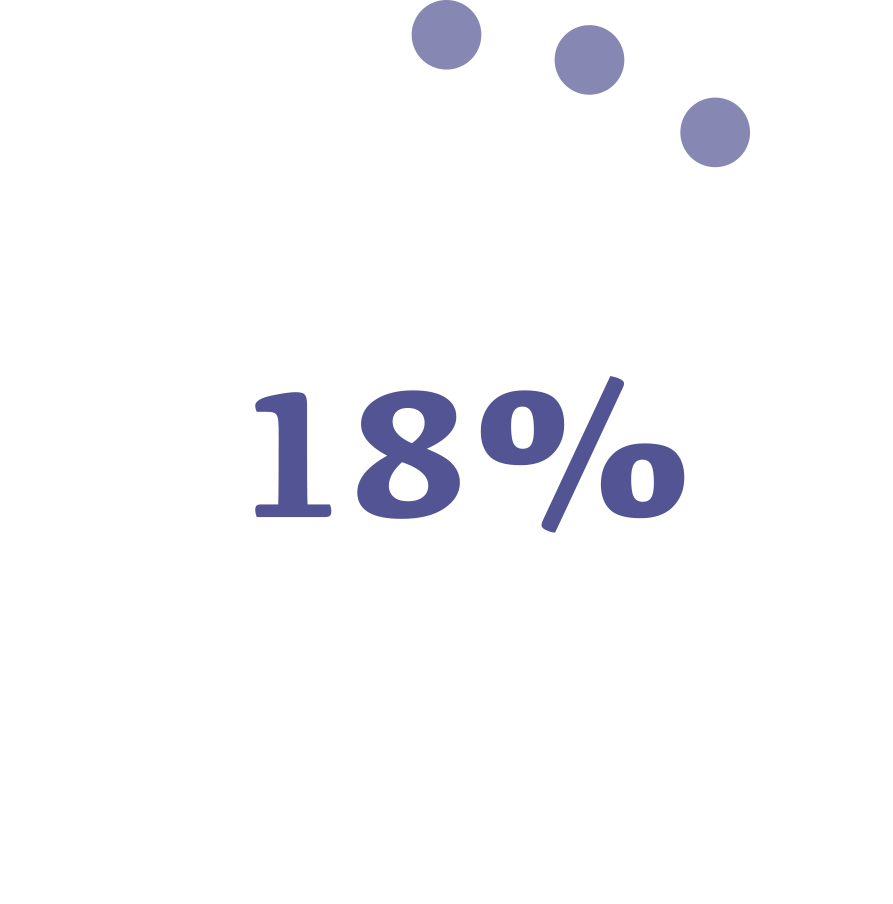
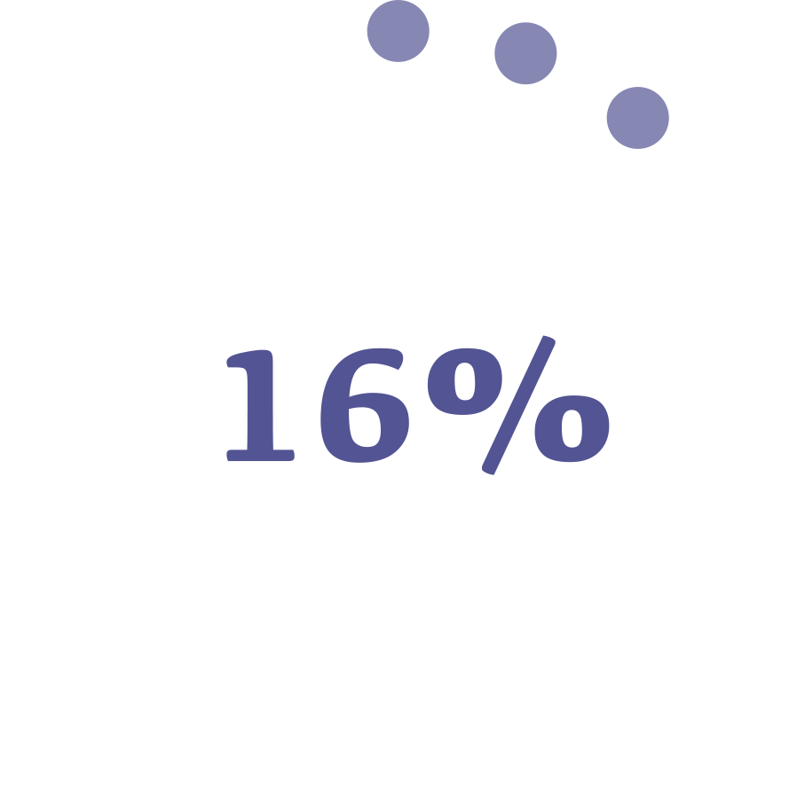

CLOSE TO ME
A metaverse-inspired social media app designed to bridge the gap between contestants and audiences, specifically for promoting talent competitions.


Age < 18
18 < Age < 30
Age > 30


1 - Main page
Loading screen of "Close To Me"
2 - Edit your image
Create a virtual avatar based on your own image

3 - Edit your event
Select and edit your daily routine

4 - Motion capture
Record your daily routine by motion capture and AI

5 - Check your message
Chat online with the people who support you
6 - Your profile
Your basic information and ranking

1 - Main page
Loading screen of "Close To Me"

2 - Pick contestants
Select the contestant you support

3 - Contestants display
Check the daily routines of the contestants you support

4 - Activities together
Join the event with the contestants you support

5 - Chat with contestant
Chat online with the contestants you support

6 - Your profile
Your points mission and a lookup of the current contestants' rankings